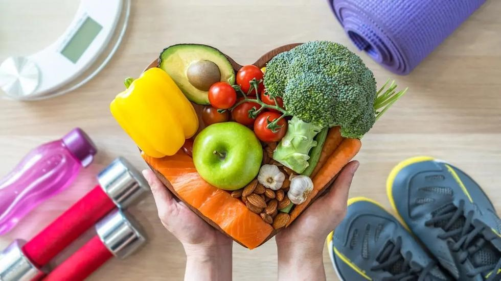

Información de Salud
Bienvenido a Salud al Día, tu fuente de información confiable sobre salud y bienestar. Aquí encontrarás artículos sobre nutrición, ejercicio, y estilos de vida saludables.
El cuidado de la salud es esencial para mantener una buena calidad de vida. Es importante seguir una dieta equilibrada, hacer ejercicio regularmente, y realizar chequeos médicos periódicos.
Importancia de cuidar la salud
- Prevención de enfermedades: Mantener hábitos saludables ayuda a prevenir enfermedades crónicas como la diabetes, enfermedades cardíacas y cáncer.
- Mejora del bienestar mental: Una buena salud física está estrechamente relacionada con una buena salud mental. Ejercicio regular y una dieta equilibrada pueden reducir el estrés y mejorar el estado de ánimo.
- Aumento de la energía: Cuidar de tu salud te proporciona más energía para realizar tus actividades diarias y disfrutar de tus hobbies.
- Longevidad: Las personas que mantienen hábitos saludables tienden a vivir más tiempo y con mejor calidad de vida.
Cómo cuidar la salud correctamente
- Alimentación saludable: Consume una dieta equilibrada rica en frutas, verduras, proteínas magras y granos enteros. Evita los alimentos procesados y las grasas saturadas.
- Ejercicio regular: Dedica al menos 30 minutos al día a actividades físicas como caminar, correr, nadar o practicar yoga.
- Hidratación: Bebe suficiente agua diariamente para mantener tu cuerpo hidratado y funcionando correctamente.
- Sueño adecuado: Intenta dormir entre 7 y 8 horas cada noche para que tu cuerpo se recupere y repare.
- Salud mental: Practica técnicas de relajación como la meditación o el yoga para reducir el estrés y mejorar tu bienestar emocional.
- Higiene personal: Mantén una buena higiene personal lavándote las manos con frecuencia, cepillándote los dientes y manteniendo tu cuerpo limpio.
- Evitar hábitos nocivos: Reduce o elimina el consumo de alcohol y tabaco, ya que estos pueden tener efectos negativos en tu salud.
Biblioteca
Aquí puedes encontrar una colección de documentos PDF sobre diversos temas de salud.
Videos
Disfruta de estos canales de YouTube para obtener más información sobre salud y bienestar: